在無解的兩難中學會傾聽
- 濱之鄉小學脇坂圭悟五年級社會課議課重點概念
- 議課不是評課，而是共同讀懂學生如何學習
- 核心問題：學生如何在真實社會兩難中聽見他人
來源：中文議課逐字稿；日文逐字稿與中日比較僅作概念校正
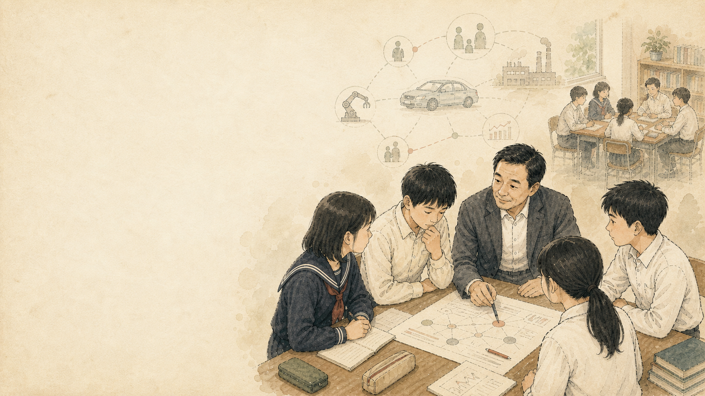
來源：中文議課逐字稿；日文逐字稿與中日比較僅作概念校正
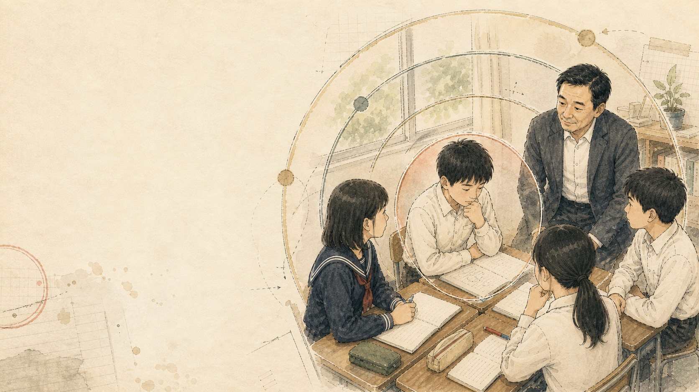
來源：議課開場與觀課者回到學生學習事實的發言
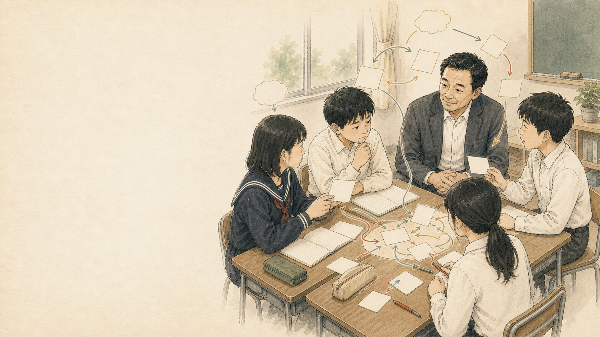
來源：議課中對社會科本質、真實兩難與關係探究的討論
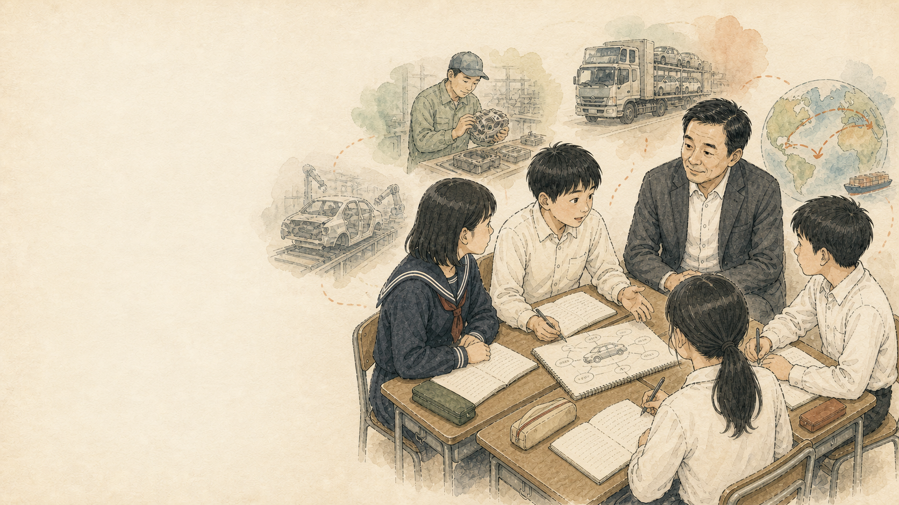
來源：約 00:16:00 起，家長訪談與汽車產業生活化設計
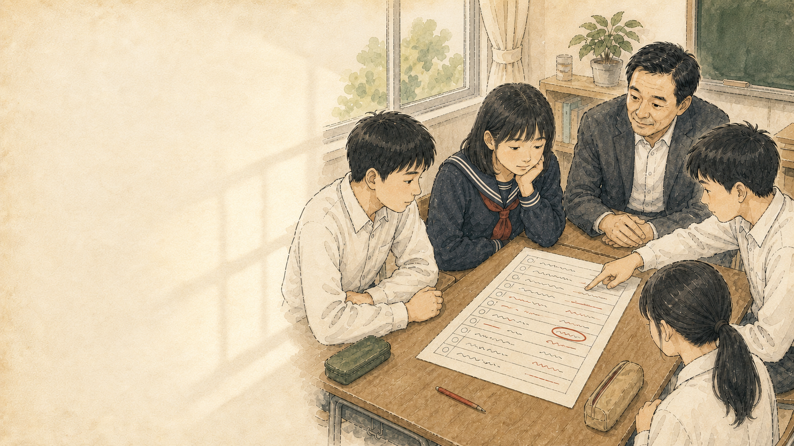
來源：議課中對「一欄表」、學生筆記與不發言學生的分析
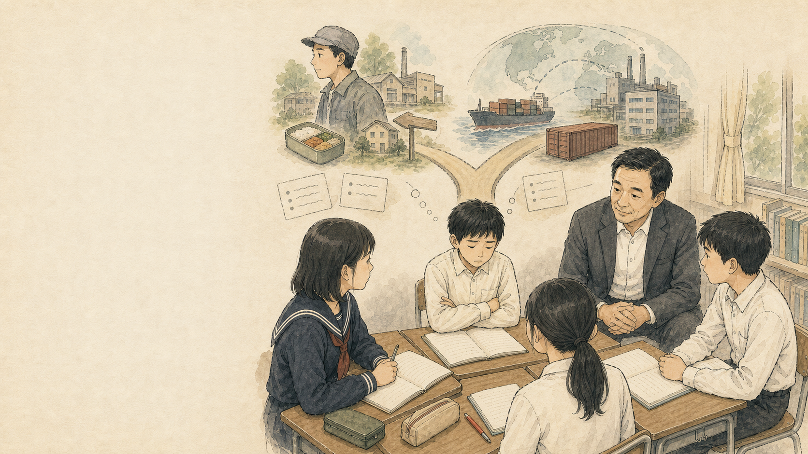
來源：議課中對國內生產、海外生產與企業存續兩難的討論
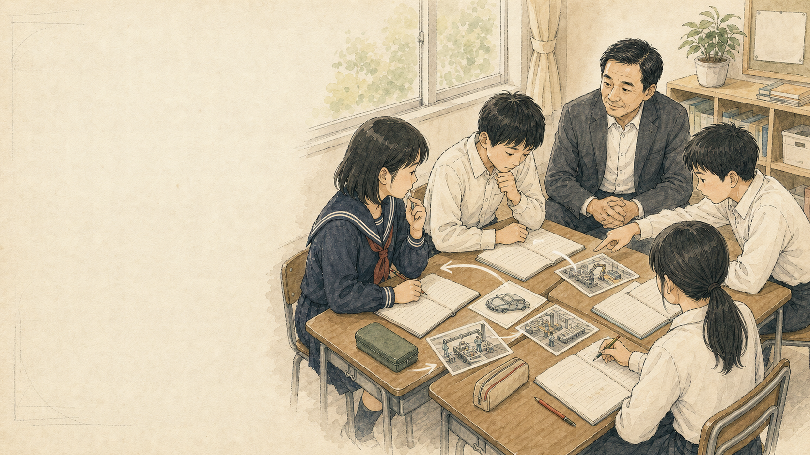
來源：議課中江次、藤田、內田等小組思考轉折的分析
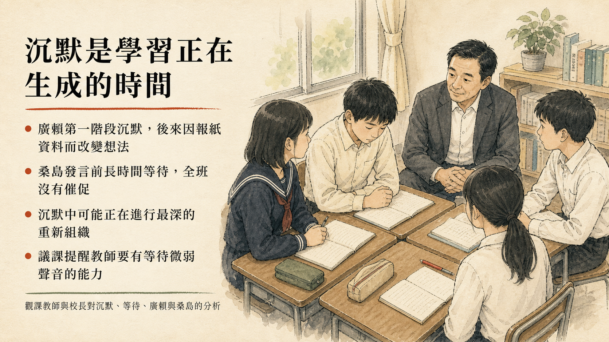
來源：對廣賴、桑島小組學習微觀對話與沉默時間的分析
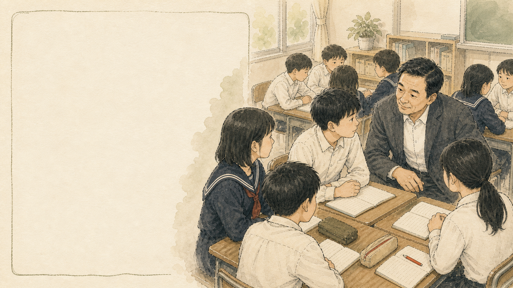
來源：議課中對佐佐木指名、眼神與參與保障的討論
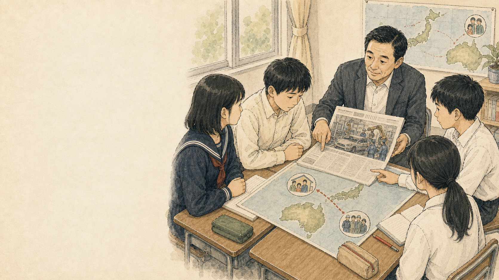
來源：議課中對新聞事件、海外生產與全球市民素養的討論
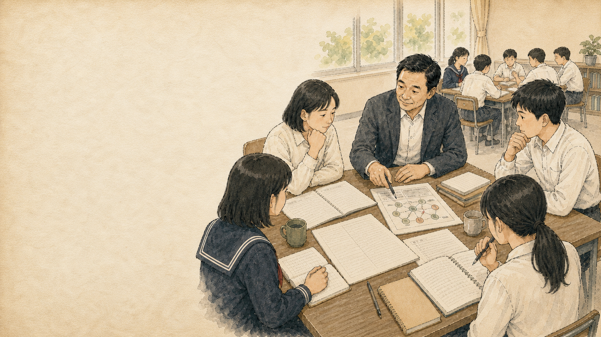
來源：觀課者發言中專業觀看方式的轉變
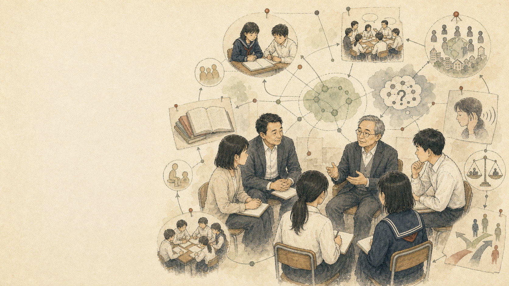
來源：佐藤學評講對課例與學習共同體哲學的連結
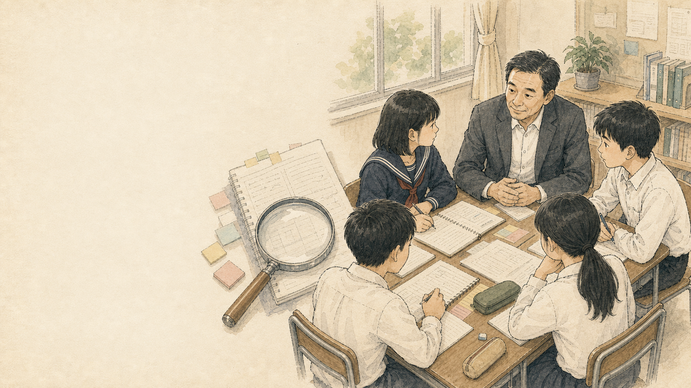
來源：中文逐字稿概念整理；日文逐字稿與比較報告校正
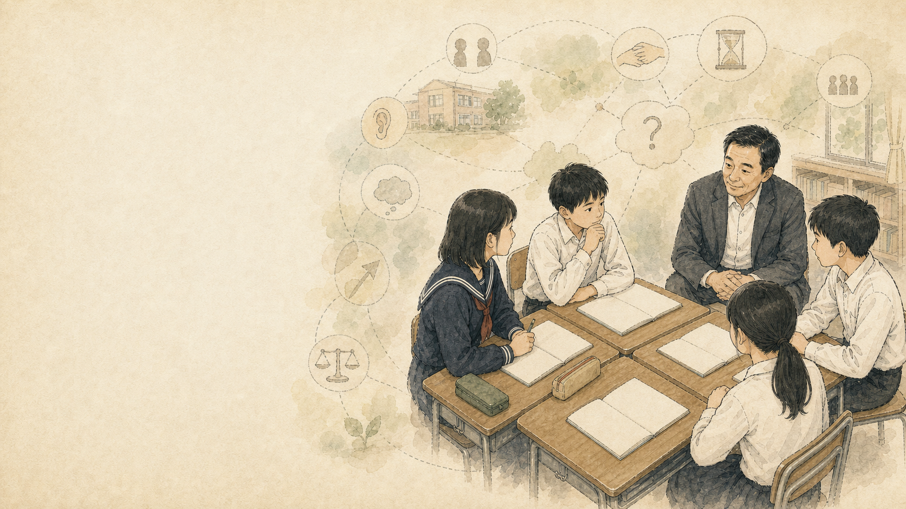
來源：議課整體收束與學習共同體哲學概念整理